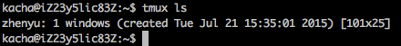

Tmux Install and Usage
tmux:tmux is a terminal multiplexer: it enables a number of terminals to be created, accessed, and controlled from a single screen. tmux may be detached from a screen and continue running in the background, then later reattached.
When tmux is started it creates a new session with a single window and displays it on screen...
使用实例
tmux的session可以attach和dettach，执行远程机器脚本的时候，可以不用担心session断开导致前功尽弃。
常见的Command Key：
$: Rename the current session%: Split the current pane into two, left and right.0 to 9: Select windows 0 to 9?: List all key bindingsd: Detach the current client
Detach the current session
CTRL + b + D
查看所有的session
Attach a session
tmux attach -t <session name>